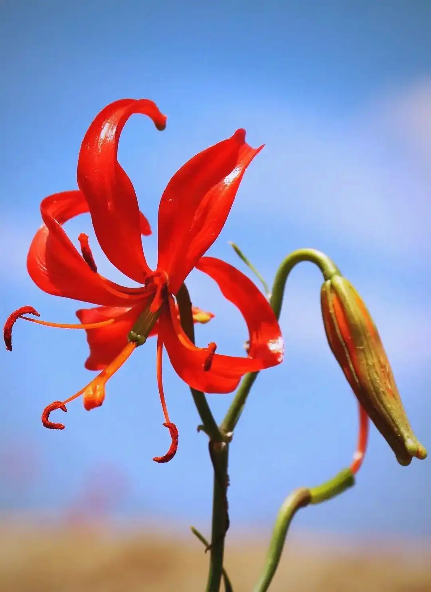
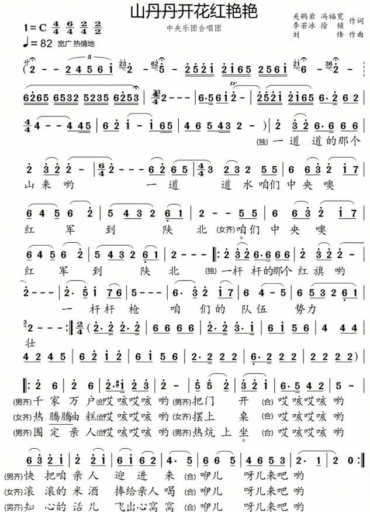

创作背景
歌曲创作于1971年，李若冰、徐锁、刘烽、关鹤岩、冯富宽作词，刘烽作曲。1971年初，中央人民广播电台的一些老同志建议整理几首陕甘宁边区的革命民歌并进行加工创作，以庆祝中国共产党诞生50周年。工作小组到延安采风，通过共同选定的两首民歌素材——陕北“信天游”和陇东的《十八姐担水》，创作出了《山丹丹开花红艳艳》。
1971年底歌曲完成后，陕西省歌舞剧院演员杨巧担任首次领唱。同年12月25日，歌曲在中央人民广播电台播出，一时间传唱大江南北。
音乐艺术特征
乐曲分为三大部分：散板引子 + 抒情中板 + 热烈快板。引子为自由散板，旋律悠长辽阔，营造黄土高原苍茫宏大的意境；中段抒情中板，旋律优美婉转，音调来自陇东民歌《十八姐担水》；末段快板节奏密集、旋律高亢上扬，情绪奔放热烈。大量使用陕北民歌典型的四度、五度跳进音程，穿插方言衬词，黄土风情浓厚。
教学目标
知识目标：了解长征落脚陕北的历史，认识陕北民歌中“借物喻情”的创作手法，熟悉三段式乐曲结构。
技能目标：根据段落变化调整音色、力度，做到层次分明，掌握长线条气息支撑。
情感目标：感悟军民团结、不畏艰难的革命乐观主义精神。
演唱处理
引子气息舒展绵长，音色空灵悠远；中段真挚柔和；高潮部分气息扎实稳定，音色明亮辉煌，强弱对比清晰。衬词演唱自然，贴合陕北语言语调，不刻意雕琢。
教学拓展
观察山丹丹花图片，理解意象象征意义；聆听乐曲纯器乐版本，感受旋律塑造的画面。
教学图片

